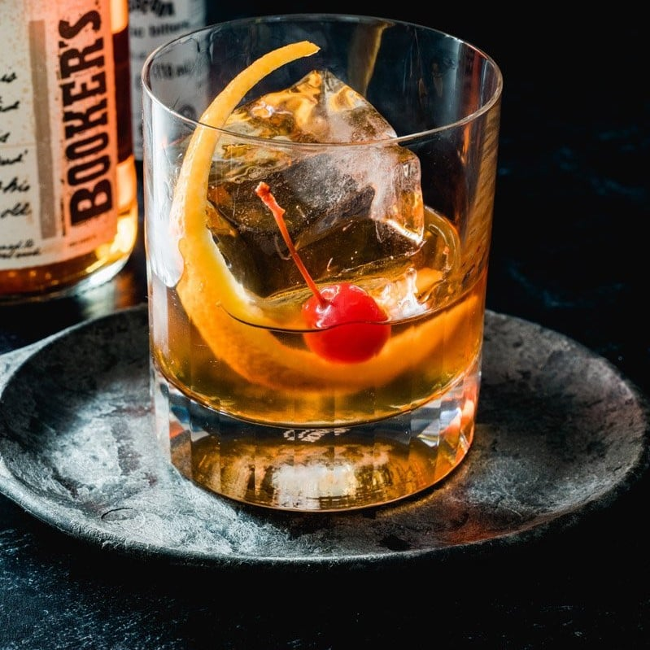

Old Fashioned

Description
This is a "foundational" cocktail, meaning it's one of the first that many people learn. It's a true classic that was first invented in Louisville, KY.
It is simplicity itself. The cocktail is typically made with Bourbon or rye, sugar and bitters. Some people use simple syrup in place of a more traditional sugar cube.
Ingredients
- 1 sugar cube
- 1 tsp water
- 4 dashes bitters
- 1.5 fl oz bourbon
- 1 maraschino cherry
- 1 orange peel
- 1 large ice cube
Steps
- Place the sugar cube in the bottom of a rocks glass.
- Add bitters.
- Add water.
- Crush the sugar with a muller.
- Add bourbon.
- Stir.
- Add ice cube.
- Garnish with orange peel and cheery.